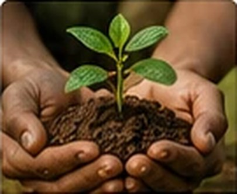
🌱 Vật tư & phân bón
Cung ứng các dòng phân bón phục vụ cây công nghiệp, cây ăn trái và nông nghiệp nhập khẩu.
Giải pháp vật tư nông nghiệp, kết nối nông sản
và phát triển chuỗi giá trị bền vững.
Đồng hành cùng nông dân và nhà vườn tại Tây Nguyên
Giải pháp phù hợp theo từng điều kiện canh tác
Cùng phát triển chuỗi giá trị bền vững
Lựa chọn sản phẩm và đối tác uy tín

Cung ứng các dòng phân bón phục vụ cây công nghiệp, cây ăn trái và nông nghiệp nhập khẩu.
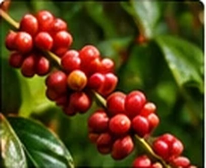
Tư vấn giải pháp dinh dưỡng và kỹ thuật cho cà phê, hồ tiêu, sầu riêng và các loại cây trồng khác.
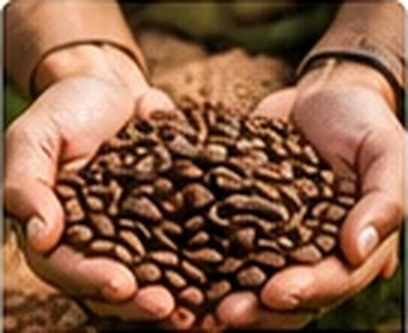
Kết nối nông hộ và đối tác thu mua, góp phần phát triển thị trường nông sản Tây Nguyên.
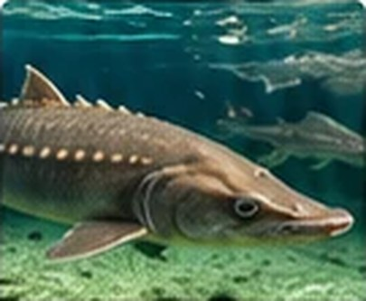
Cung ứng thức ăn, vật tư và giải pháp cho nuôi cá tầm giống và thương phẩm.
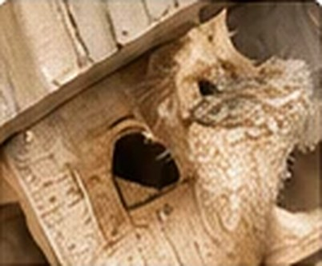
Đồng hành cùng các mô hình nuôi yến, cung ứng vật tư và kết nối đầu ra.
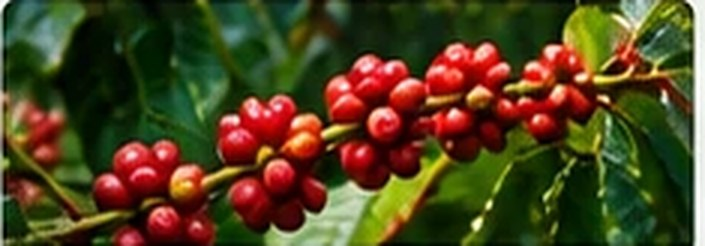
Giải pháp dinh dưỡng và chăm sóc theo từng giai đoạn sinh trưởng.
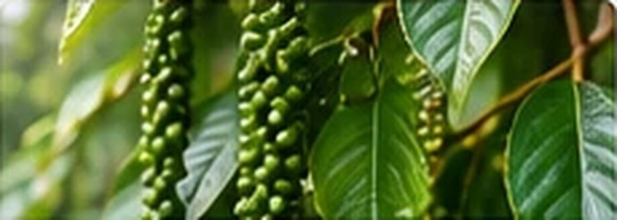
Tư vấn giải pháp bền vững cho vườn tiêu khỏe mạnh.
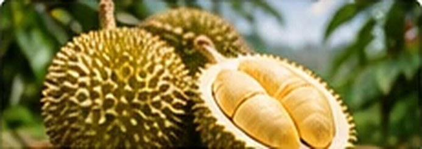
Đồng hành cùng nhà vườn từ giai đoạn kiến thiết đến thu hoạch.
Cung ứng phân bón, thức ăn, vật tư và tư vấn kỹ thuật.
Đồng hành cùng nông dân và trang trại trong quá trình sản xuất.
Kết nối nông sản với đối tác, mở rộng thị trường.
Hợp tác với các đối tác trong và ngoài nước.
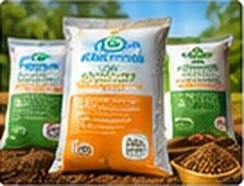
Tiến Nông • Phú Mỹ • Bình Điền • Cà Mau • và các dòng khác
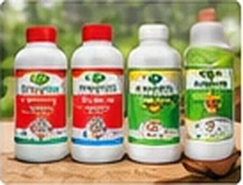
Sản phẩm phục vụ canh tác nông nghiệp
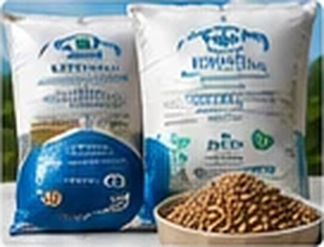
Dabaco • Việt Nhất và các dòng thức ăn thủy sản
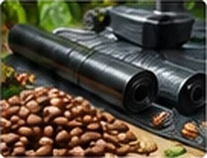
Vật tư phục vụ sản xuất và chăn nuôi.
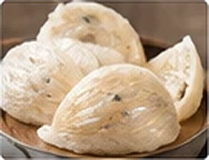
Vật tư và sản phẩm phục vụ nuôi yến
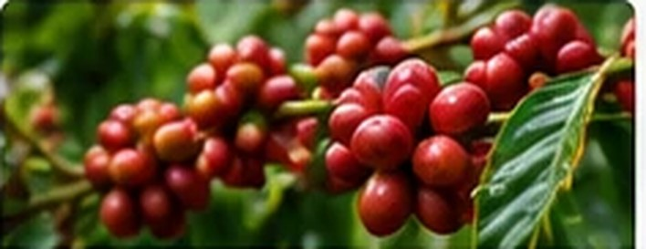
Những lưu ý quan trọng giúp vườn cà phê phục hồi tốt và chuẩn bị cho vụ mới.
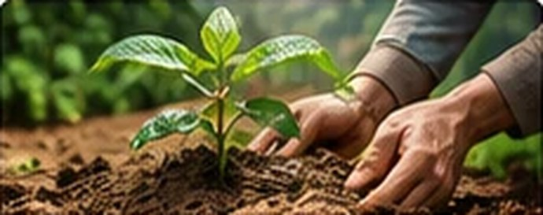
Hướng dẫn lựa chọn phân bón theo nhu cầu dinh dưỡng và điều kiện canh tác thực tế.
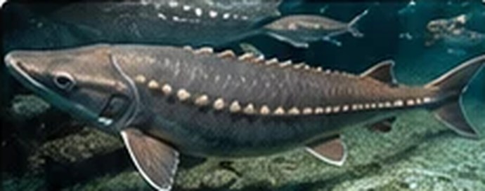
Những yếu tố cần quan tâm trong quá trình nuôi để đảm bảo hiệu quả và phát triển bền vững.
Ong Vàng luôn sẵn sàng kết nối, lắng nghe và đồng hành
cùng bà con nông dân, trang trại và đối tác.
Để lại thông tin, Ong Vàng sẽ liên hệ lại với bạn trong thời gian sớm nhất.